The Nine-point Circle
28 February 2024
Let us start off with a simple triangle . We draw the altitudes for each respective vertex, intersecting the corresponding sides at . It is a well-known fact that these three altitudes will intersect at a single point, the orthocenter, denoted as .
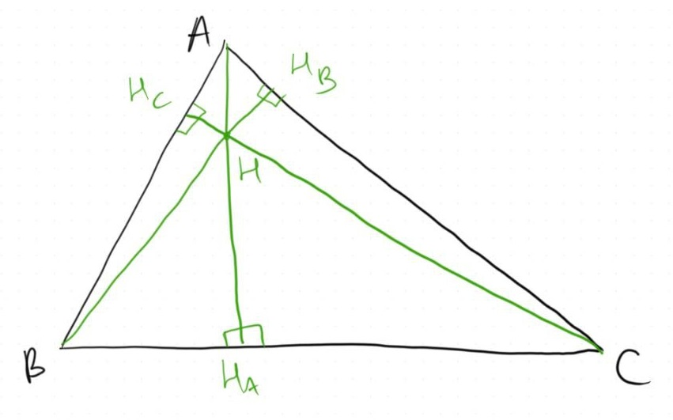
Next, we take the midpoints of and denote them as , respectively.
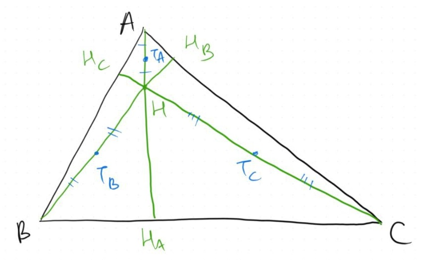
Finally, the midpoints of denoted as .
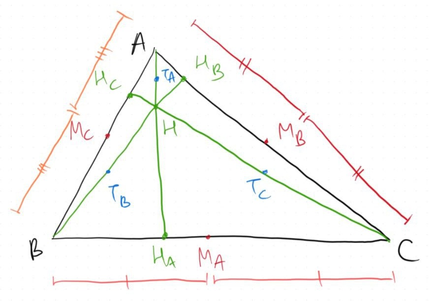
In case you haven’t known, the points all lie inside a common circle, thus the name nine-point circle. Therefore, let’s explore the proof that these nine points indeed lie on a single circle!
The Proof
Let’s focus ourselves on . Note that both and are midpoints of and respectively. Therefore, .
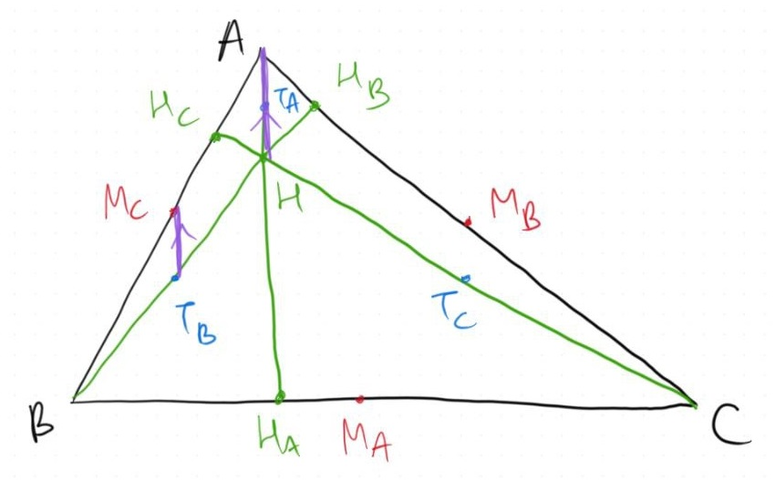
We can use the same idea to prove that .
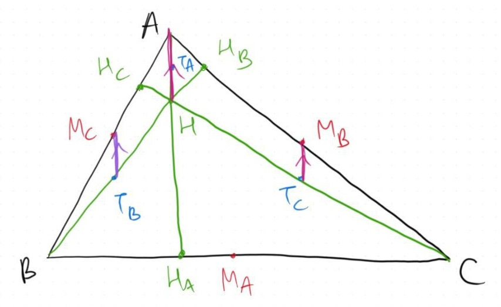
The same idea again to prove that and , which also implies due to the fact that is the altitude corresponding to . Thus, both and are perpendicular to both and .
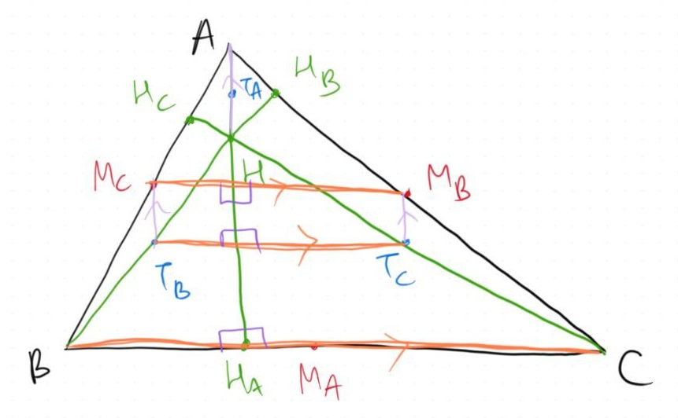
Combining these arguments, we can conclude that is a rectangle!
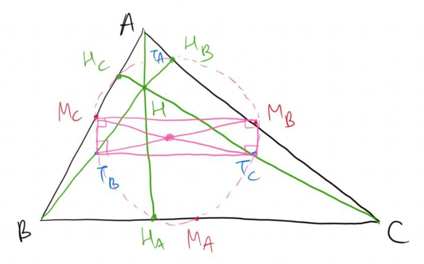
Consider the circle that inscribes . SInce is a rectangle, both and are diameters of this circle.
Now, we can repeat these arguments again to prove that and are also rectangles and are inscribed within this same circle because they have common diameters.
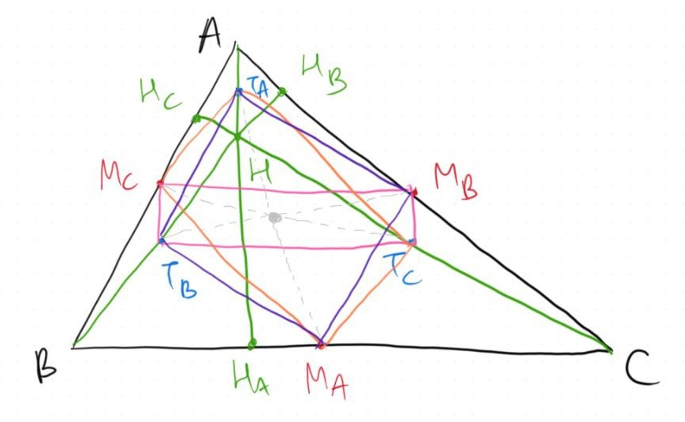
Therefore, at this point, we managed to prove that all lie on the same circle and we’re left with proving that also lie on this circle.
This can be done rather quickly because we know that is a diameter of the circle so for any point in the circle, is a right angle. But this is the case for because . Therefore, lies on this circle.
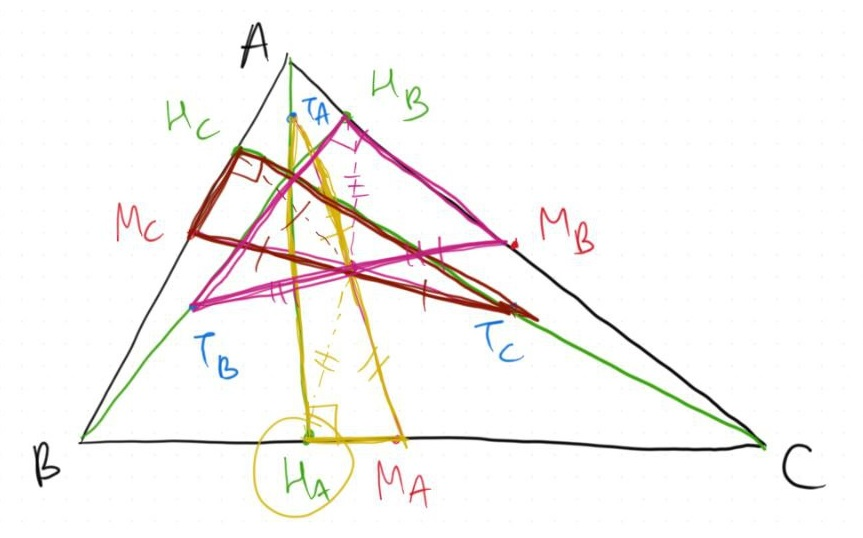
Analogously we can prove that and lie on the circle and therefore our proof is complete!
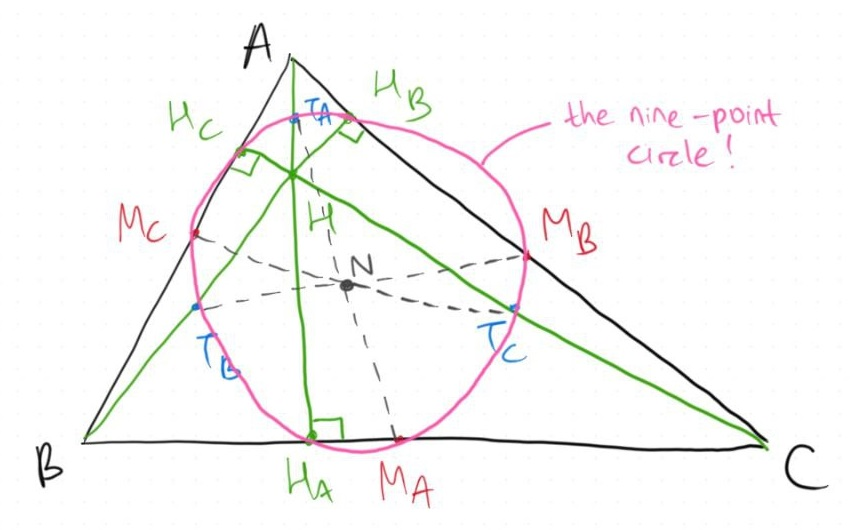
What’s Next
There some interesting properties derived from the existence of the nine-point circle. You can easily find these online, but my personal favourite would be the Euler line!
The Euler line of is a line, that passes through the orthocenter , the centroid , the circumcenter , and the nine-point center with the following property:
While the proof might be out of scope, I would like to keep this article short and simple as the main purpose is to appreciate how we can construct such well-worded arguments to proof the existence of the nine-point circle!
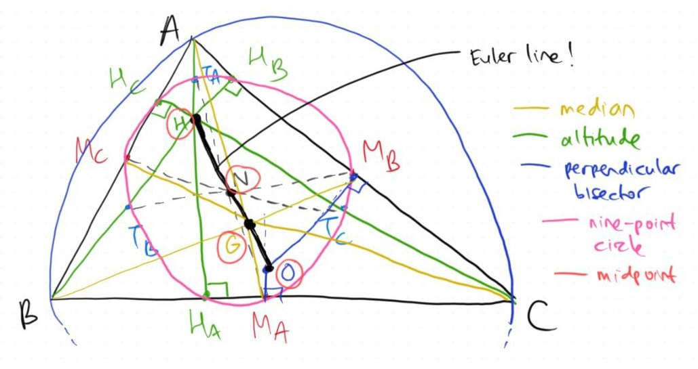